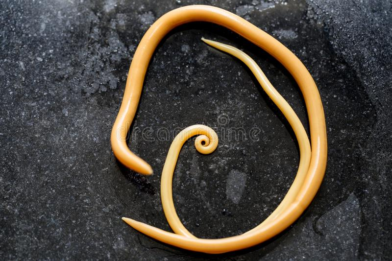

Informações Gerais
A Ascaridíase
A ascaridíase é uma infecção parasitária causada pelo verme *Ascaris lumbricoides*. Este é um dos helmintos intestinais mais comuns em humanos, especialmente em áreas com saneamento inadequado. O verme adulto vive no intestino delgado, onde pode causar diversos sintomas. A infecção ocorre quando os ovos do parasita, presentes no solo ou alimentos contaminados, são ingeridos. Após a ingestão, os ovos eclodem no intestino e as larvas migram para o pulmão e depois retornam ao intestino, onde se desenvolvem em vermes adultos.
